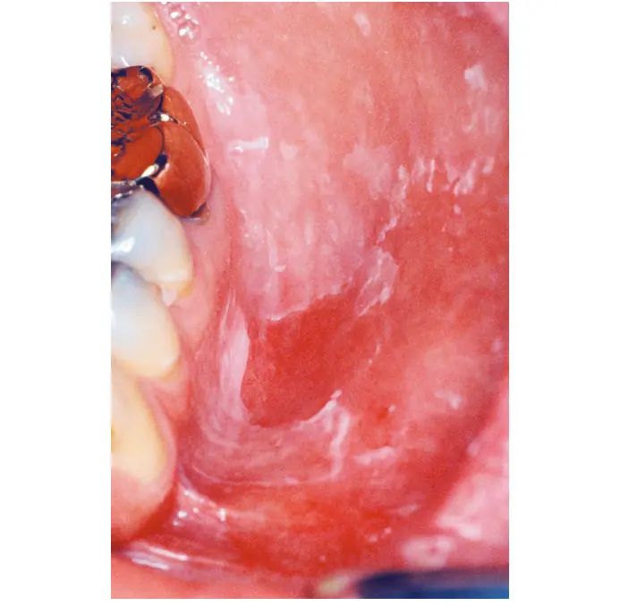

نسخه استخراجشده؛ ترجمه یا تأیید علمی انجام نشده است. وضعیت: captured
خانم ۴۲ سالهای در فرم شرح حال نوشته: «به کدئین و پنیسیلین حساسیت دارم.» وقتی میپرسی، میگوید کدئین حالت تهوعش را بد کرده و پنیسیلین سالها پیش تنش را پر از کهیر خارشدار کرده است. کدامیک آلرژی است؟

واکنشهای حساسیت را در چهار نوع میشناسیم. سه نوع اول کار آنتیبادیاند و نوع چهارم کار لنفوسیت T.
اریتم مولتیفرم واکنش کمپلکس ایمنی است: ضایعههای هدفمانند و زخمهای لب، مخاط باکال و زبان. در حدود نیمی از بیماران محرکی مثل داروهای سولفا یا عفونت هرپس پیدا میشود.
استوماتیت تماسی نوع IV است؛ آمالگام، کامپوزیت، نیکل، دهانشویه یا خمیردندان عاملش میشوند. چون دیر ظاهر میشود، دربارهی تماسهای چند روز قبل بپرس. عامل را پیدا و حذف کن؛ اگر ضایعه ماند، کورتیکواستروئید موضعی بده.
وقتی بیمار از «حساسیت» میگوید، سه چیز را دقیق بپرس: کدام ماده، دقیقاً چه اتفاقی افتاد و چه درمانی گرفت. واکنش آلرژیک واقعی دستکم یکی از این نشانهها را دارد:
اگر هیچکدام نبوده، احتمالاً آلرژی نبوده است. دو نمونهی رایج از برچسب اشتباه: غش پس از تزریق بیحسی و تهوع و استفراغ پس از مسکن اپیوئیدی مثل کدئین.
در شبهآلرژی (واکنش آنافیلاکتوئید) ماستسل بدون آنتیبادی مواد خود را آزاد میکند. بیشتر واکنشهای بهاصطلاح آنافیلاکتیک به بیحسی موضعی از این نوعاند، ولی اقدام اورژانس همان است.
آلرژی تأییدشده را آشکارا در پرونده بنویس و آن ماده را دیگر به کار نبر. بیشتر بیماران آلرژیک هر درمان لازمی را میتوانند بگیرند، به شرط دوری از آن ماده. بیمار آتوپیک احتمال بیشتری دارد به مادهی دیگری هم حساس باشد.